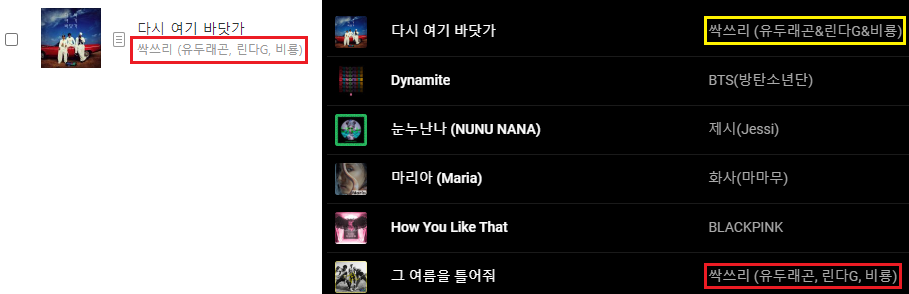
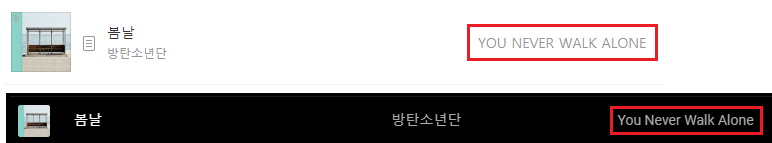

필자는 음악 스트리밍 서비스로 Youtube Music을 이용하고 있다. Youtube Premium에 포함되어 있길래 그냥 같이 쓰고있다. 플레이 리스트 생성이나 자동재생 기능은 만족하면서 쓰고있지만, 차트 기능이 좀 부족한 것 같았다. 물론 한국 인기곡 Top100 차트가 있긴 한데 유행하는 신곡이 나와도 업데이트가 빠르게 되는 것 같지 않다.
한국 노래 차트하면 대표적으로 멜론 차트가 있다. 그래서 이 멜론 차트를 주기적으로 크롤링해서 내 플레이리스트에 넣으면 되겠다! 라는 생각이 들었다. 하지만, Youtube API는 있는데 아무리 찾아봐도 Youtube Music API는 찾을 수가 없었다.
그렇게 구현을 포기하고 있다가 어느날, 이 API를 어떤 사람이 직접 구현한 것을 발견했다! 그것을 보고 바로 개발을 시작했다.
API 파악
이 API는 python으로 만들어져 있다. python은 오랜만에 해보는 언어라서 어떻게 개발 환경을 만들어야 할지 좀 찾아봤다. (자세한 구축 방법은 다음 문단에)
다행히 문서가 잘 정리되어있어서 API를 쓰는데 어려움 점은 없었다.
이 API는 크게 인증된 요청(Authenticated requests) 과 인증되지 않은 요청(Unauthenticated requests) 두 가지로 나눌 수 있다.
인증된 요청은 말 그래도 사용자 인증이 된 상태에서 하는 요청이다. 보통 유저와 관련된 요청(플레이 리스트 추가, 추천…)들이 여기에 속한다. 인증된 요청을 쓰기 위해서는 로그인된 유저의 쿠키가 필요하다. 아마 이 API는 Youtube Music에게 HTTP 요청을 보내 받은 값을 처리하는 구조인 것 같은데, 그때 사용하는 것 같다.
인증되지 않은 요청은 이와 반대로 사용자 인증이 필요 없는 요청이다. 검색이나 곡 정보 보기 같은 것들이 해당한다.
개발 환경 구축
API가 python으로 만들어져 있기 때문에 python 개발 환경 구축방법들을 찾아보았다.
일단 python은 그냥 쓰기에 좋지 않다. 모든 환경이 각 프로젝트에 맞춰져 있지 않고 글로벌하게 맞춰져 있기 때문이다. Python 프로그램 자체가 그런것은 그럴 수 있는데, 문제는 라이브러리 패키지도 그렇다는 점이다.
예를 들어 AProject에서 B-1.0.2 라이브러리를 쓴다고 하자. 이때 새로운 BProject를 만들고 이 프로젝트는 B-4.5.1 라이브러리를 쓰도록 설정했다. 이러면 python(정확히는 pip)은 기존에 설치되어있던 B-1.0.2를 B-4.5.1로 업데이트 하게 된다. 그러면 이제 AProject는 B-4.5.1 라이브러리를 쓰게 되고, 버전이 의도치 않게 올라갔기 때문에 문제가 발생할 가능성이 생기게 된다.
이 문제를 해결하기 위해서는 각 프로젝트마다 독립된 환경을 구축할 필요가 있다. 이러한 것들을 도와주는 여러 프로그램들이 있는데, 필자는 Virtualenv를 사용했다. Virtualenv는 쉽게 말해 라이브러리랑 python 그 자체를 한 폴더에다가 넣어두고, 실제로 사용할 땐 그 폴더 안에서 동작하도록 가상화해준다.
사용법은 아주 간단하다. 먼저 Virtualenv를 설치해 준다. (이미 설치가 되어있다면 할 필요 없음)
$ sudo pip install virtualenv
Windows의 경우
sudo를 빼주면 된다.
설치가 되었으면 가상환경을 구축할 프로젝트 폴더로 가서
$ virtualenv env
를 입력하면, env라는 폴더가 생기게 된다.
폴더가 생겼다고 바로 쓸 수 있는 것은 아니다. 작업을 시작하기 전에 수동으로 활성화해야 한다.
$ source env/bin/activate
Windows의 경우
./env/Scripts/activate라고 입력하면 된다.
를 입력하면 가상환경이 활성화가 된다. 이제 pip나 python 명령어를 실행하면 env폴더 내부에서 처리하게 된다.
작업을 다 끝내고 가상환경을 비활성화 하고 싶으면 간단하게
$ deactivate
를 입력하면 된다.
이외에 여러가지 찾아보니까 부실한 pip를 대신해 Poetry라는 패키지 매니저도 있었다. 하지만 프로젝트 규모도 크지 않고, 무엇보다 귀찮아서 그냥 pip를 쓰기로 했다.
이외에 편집기로는 기존에 쓰던 VSCode를 이용했다.
멜론 차트 크롤링
웹 크롤링을 구글에 검색하면 대다수가 python을 이용한 크롤링이라서 정보를 아주 쉽게 얻을수가 있다. 방법을 간단히 요약하자면,
- request를 이용해 웹 페이지를 가져온다.
- BeautifulSoup를 이용해 가져온 웹 페이지에서 원하는 정보를 뽑아낸다.
자세한 방법은 검색하면 많이 나오니 여기서는 생략하겠다.
멜론 차트에서 정보를 뽑아오기 위해서는 먼저 차트 페이지가 어떤 구조로 되어있는가를 알아야 한다.
차트 페이지에서 얻어야 할 정보는 곡 이름, 앨범, 그리고 작곡가이다. 얻고자 하는 정보에 마우스 우클릭->검사(혹은 Ctrl-Shift-I)를 누르면 해당 element로 이동하기 때문에 좀 더 편리하게 구조를 분석할 수 있다.
|
|
구조를 간략하게 분석한 내용이다. 차트 자체는 table로 이루어져 있고, 각 곡들은 table에 한 줄씩 차례대로 들어가있다. 각 줄의 4번째 <td>랑 5번째 <td>가 각각 곡 이름+작곡가, 앨범의 정보를 가지고 있다.
이 정보만 가지고도 충분히 뽑아올 수 있지만, 좀 더 살펴보니 더 편한 방법이 있었다. 곡 이름, 작곡가, 앨범 정보들이 모두 <div class="wrap_song_info"> 안에 있어서 저 클래스만 가지고 뽑을 수도 있겠다 라는 생각이 들었다. 실제로 CSS Selector로 .wrap_song_info 를 검색하니까 [1등 곡 이름+작곡가, 1등 곡 앨범, 2등 곡 이름+작곡가, 2등 곡 앨범, …] 이렇게 손쉽게 정보를 뽑아올 수 있었다.
|
|
먼저 BeautifulSoup를 이용해 .wrap_song_info인 요소들을 다 가져온다. 그리고 반복문을 돌면서 요소들 안에 있는 곡 이름, 작곡가, 앨범 정보들을 빼서 배열에 튜플로 넣어준다.
완벽해! 하고 프로그램을 돌리니까 오류가 발생했다… 응답 내용을 보니 406 Not Acceptable 이 찍혀 있었다. 그래서 검색해보니까 requests의 User-Agent가 몇몇 사이트에서는 막는 경우가 있다고 한다.
|
|
그래서 그냥 헤더에 Chrome의 User-Agent 값을 넣었다. 다행히 잘 작동했다.
Youtube Music에 넣기
ID 찾기
Youtube Music에 음악을 넣기 위해서는, 각 곡의 ID를 알아야 한다. 가지고 있는 정보는 곡 이름, 작곡가, 앨범인데 다음과 같은 방식으로 찾았다.
- 곡 이름을 Youtube Music에 검색한다.
- 검색 결과중에 앨범명이 일치하는 곡이 있으면 그 곡을 선택한다.
- 없을 경우, 작곡가와 일치하는지 확인 후 있으면 그 곡을 선택한다.
- 그래도 없을 경우, 그냥 첫 번째 곡을 선택한다.
일치하는지 여부 확인은 두 문자열이 정확히 일치하는지를 확인하지 않고, 문자열 중 하나가 다른 문자열에 포함될 경우를 일치한다고 정했다. 멜론에서 쓰는 작곡가/앨범 이름이 Youtube Music하고 다른 경우가 종종 있어서 이런 방식을 사용했다. 특히 영어 이름인 경우에 이런 예외가 많았는데, 예를 들어 멜론에서 아이유 라는 이름이 Youtube Music에서는 IU(아이유) 라고 표기되어 있다.
|
|
포함 여부는 find()함수를 쓰면 쉽게 알 수 있다.
플레이리스트에 넣기
플레이리스트에 넣는 방법은 간단하다.
- 이전에 플레이리스트를 만들어서 해당하는 플레이리스트 ID를 가지고 있다면, 4번으로 넘어간다.
- 해당 계정이 가지고 있는 플레이리스트를 전부 가져온 뒤, 해당하는 플레이리스트가 있으면 그 플레이리스트 ID를 가져온다.
- 없을 경우 플레이리스트를 만들고 해당 ID를 가져온다.
- 플레이리스트에 있는 모든 곡들을 제거한다.
- 플레이리스트에 미리 찾아둔 곡 ID들을 이용해 곡들을 전부 넣는다.
플레이리스트에 곡들을 넣을 때 주의할 점이 있는데, 곡 ID들이 중복되어서는 안 된다. 중복으로 넣으려 하면 이미 있는 곡이라고 중간에 곡 넣는 작업이 중단되기 때문이다.
검색 정확도 높이기
이렇게 코딩을 하고 실제로 돌려보니 잘 돌아갔다. 하지만 의도한 것과는 다른 곡들이 들어가는 경우가 종종 있었다. 그래서 이런 오류들을 고치기 위해 여러 추가 작업들을 했다.
작곡가보다 앨범을 우선해서 확인
초기 버전에서는 곡 검색 후 작곡가가 먼지 일치하는지를 확인했었다. 하지만 이 방식으로 하니까 종종 엉뚱한 곡이 들어가는 경우가 생겼다. Youtube Music에서 작곡가 명이 조금씩 다르기 때문이다.

왼쪽이 멜론에서의 곡 정보, 오른쪽이 Youtube Music에서의 곡 정보이다. 다시 여기 바닷가 라는 곡의 작곡가가 멜론에서는 싹쓰리 (유두래곤, 린다G, 비룡) 으로 되어있고 Youtube Music에서는 싹스리 (유두래곤&린다G&비룡) 으로 되어있다. , 가 & 로 바뀌어서 서로 일치하지 않는다고 판단하고, 오히려 전혀 다른 곡이지만 작곡가 명이 일치하는 그 여름을 틀어줘가 대신 들어가게 된다.
또한 어떤 작곡가는 한글명만 쓰여있고, 어떤 작곡가는 한글명(영어명) 으로 쓰여있고, 어떤 작곡가는 영어명만 쓰여있는 등 일관성이 없기도 하다.
이처럼 작곡가 이름은 서로 다르거나 일관성이 없는 경우가 많은 반면에, 앨범 이름은 대체로 멜론과 Youtube Music 둘 다 같은 이름을 가지는 경우가 많았다. 그래서 앨범이 작곡가보다 더 신뢰할만하다고 판단해, 앨범이 먼저 일치하는지 확인하도록 바꾸었다.
일치 여부 확인 전에 전부 소문자로 바꾸기
앨범을 먼저 확인하도록 바꾸었어도 종종 오류가 발생해서 확인해봤더니 이런 경우도 있었다.

위쪽의 멜론에서는 YOU NEVER WALK ALONE 으로 전부 대문자로 되어 있는 반면에, 아래쪽의 Youtube Music에서는 You Never Walk Alone 으로 단어의 첫 글자만 대문자로 되어있다. 그래서 서로 일치하는지 확인하기 전에 모든 영문자들을 소문자로 바꾸는 전처리과정을 추가했다. Python에서는 이 과정을 문자열 뒤에 .lower()만 붙이면 된다.
검색 결과를 한국어로 바꾸기
이런저런 작업들을 해도, 근본적으로 검색 결과가 영어로 나오기 때문에 오류가 이따금씩 발생하고 있었다. API가 아직 한국어를 지원하지 않아서 그렇다. 그래서 한국어를 지원하도록 API를 수정하기로 했다.
다행히 이 문서를 보고 추가 언어 지원을 할 수 있다고 한다. 여기서 ytmusicapi는 gettext를 사용하고 있다는 것을 알 수 있었다.
.po 파일을 수정하고 (Poedit을 사용했다), 파일들을 라이브러리 폴더에 넣고, 언어 설정을 ko로 바꾸었다. 검색 요청을 날려보니 다행히 한국어로 잘 나왔다.
그런데 몇몇 검색에서는 결과값이 전혀 안 나오고 []만 나오는 현상이 발생했다. 실제로 웹에서 검색을 하면 잘 나와서 검색 결과가 없는게 아닌데 라는 생각으로 라이브러리를 뜯어보았다. 그리고 문제점을 발견했다.
|
|
유틸 관련 파일에 있는 to_int()함수이다. 구현이 그냥 문자열을 띄어쓰기를 기준으로 나누고 나눈 것의 첫번째를 숫자로 바꾼다. 이 함수가 문제였다.
위 함수는 숫자가 있는 데이터(조회수, 좋아요 수…)에서 숫자 정보만 빼기 위해 만든 함수이다. 영미권 언어들은 저런 구현이 가능한게, ‘153 songs’, ‘156k follwers’ 처럼 왠만하면 무조건 숫자가 앞에 나오게 된다. 하지만 한국어의 경우, ‘노래 153곡’, ‘팔로우 15.6만명’ 처럼 앞에 숫자의 정보가 있고, 숫자 뒤에 접미사까지 붙게 된다. 이 때문에 한국어에서 저 함수를 호출하면 ‘노래‘를 숫자로 변환하려고 하게 되고, 예외가 발생해서 올바른 값이 나오지 않게 된다.
|
|
그래서 문자열에서 숫자만 추출해서 변환하도록 코드를 수정했다. 문자열을 돌면서 가장 처음에 나온 숫자의 위치와 가장 나중에 나온 숫자의 위치를 알아내고, 그 위치를 기준으로 문자열을 자른 후 그 문자열을 변환하게 만들었다.
이 코드 말고도 다른 곳에서도 비슷하게 숫자를 처리하는 로직이 있는데, 일단 저 함수만 수정해도 잘 돌아갔다. 그래서 저런 로직들을 싹다 수정해서 PR을 올리려고 했는데, 골치아픈 문제가 있었다.
숫자가 적을 경우는 문제가 안 되는데, 숫자가 많아져서 줄어들게 될 경우 문제가 발생한다. 숫자 뒤에 k, m이나 천, 만 같은 접미사가 붙게 되어서 숫자만 추출하면 저 접미사가 빠져서 원래 숫자보다 더 적게 나오게 된다. 그렇다고 뒤에 한 글자만 더 포함하자니 접미사가 안 붙는 경우도 있고, 언어마다 다른 경우도 있는 등 고려할 게 많았다. 그리고 이 모든 것들을 수정하기에는 귀찮기도 해서… 그래서 그냥 오류가 안 날 정도로만 수정해서 쓰고있다. 어차피 숫자 데이터는 안 쓰기 때문에…
배포
배포는 이전에 했던 프로젝트랑 비슷하게 Docker를 이용했다.
|
|
파일을 복사하고, pip로 패키지 설치하고, 실행하는 간단한 구조이다. 실행하기 전에 ytmusicapi 수정한 부분을 덮어씌우는 과정이 있다. 이 Dockerfile을 이용해 docker image를 만들면 된다.
|
|
그리고 만든 docker image를 띄우면 된다. 필자는 docker-compose를 사용했다. 환경 변수 설정이나 volume 마운트 설정이 편하기 때문이다.
느낀 점
오랜만에 쓰는 python이라 그런지 생각보다 재미있었다.
완성하긴 했는데 막상 별로 사용하지는 않을 것 같다. 노래를 자주 듣지 않기도 하고, 요즘은 그냥 Youtube 추천 노래들만 듣고있다. 그래도 한 번 만들어보고 싶었던 것이여서 만족한다.